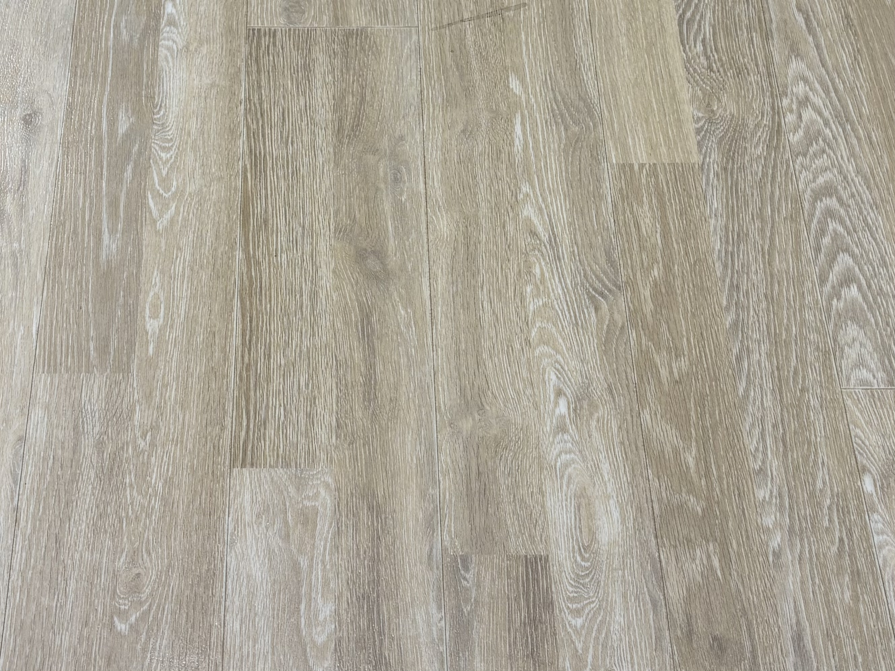

기독교기념관
목재
시트 바닥재
시트 바닥재는 구조적으로 충격 흡수력이 뛰어나 발걸음이 부드럽게 전달되고,
소음이 크게 나지 않아 병원·학교·오피스처럼 조용함이 필요한 공간에서 자주 사용된다.



시트 바닥재는 구조적으로 충격 흡수력이 뛰어나 발걸음이 부드럽게 전달되고,
소음이 크게 나지 않아 병원·학교·오피스처럼 조용함이 필요한 공간에서 자주 사용된다.